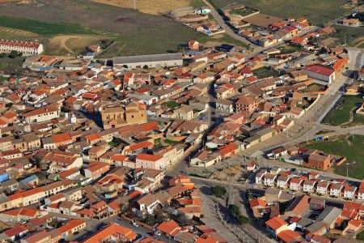

Coreses es un municipio y localidad española de la provincia de Zamora, en la comunidad autónoma de Castilla y León.
Se encuentra enclavada en la comarca de Tierra del Pan, a poco más de 15 km de Zamora, la capital provincial, y 23 km de Toro.
Enlace directo a la página del ayuntamiento de
Coreses

Localización: Enclavado en la comarca de Tierra del Pan, en la provincia de Zamora, limita al norte con Molacillos, Algodre y Villalube, al sur con el río Duero, al este con Toro y Fresno de la Ribera, mientras que al oeste linda con Zamora y Monfarracinos. Al sur del término se encuentra la dehesa de San Pelayo, antiguo poblado independiente.
Geografía: Coreses se extiende por 43,38 km², a una altitud entre 630 msnm en San Pelayo y 784 msnm en el Teso Mayo, estando el núcleo urbano a 653 msnm. Su término se asienta sobre suelos aluviales y detríticos, formando una amplia llanura que mira hacia el mediodía y por la que discurre el río Duero. En sus bordes existen pequeños tesos de en torno a los 700 msnm, denominados San Martín, El Quemado, Calderón, Teso Mayo, Valcuevo, La Calabaza, El Núgaro y El Teso El Cuerno.
Historia: Coreses fue fundado en la Edad Media con mozárabes procedentes de Coria, dentro de los procesos repobladores emprendidos por los reyes leoneses, hecho del cual procede su nombre, que deriva del gentilicio que se daba a las gentes de Coria en época medieval. El 4 de noviembre de 1301 Fernando IV concedió los derechos, servicios, tributos y arbitrios de la localidad de Coreses a Juan Alfonso de Benavides en agradecimiento por los servicios prestados. Con la creación de las actuales provincias en 1833, Coreses quedó integrado en la de Zamora, dentro de la Región Leonesa, la cual, como todas las regiones españolas de la época, carecía de competencias administrativas. Tras la constitución de 1978, Coreses pasó a formar parte en 1983 de la comunidad autónoma de Castilla y León, en tanto municipio perteneciente a la provincia de Zamora.
Cultura: Su principal instalación cultural es su Biblioteca Pública Municipal Centro Cultural de Coreses "Ramón Álvarez"
Naturaleza:
Tradiciones: Como tradiciones tienen varias festividades que celebran todos los años en determinadas fechas:
"Los quintos" (Festividad de reyes): Se celebra el día de Reyes (5 y 6 de enero), y es la gran festividad de los quintos. Empieza la noche de Reyes y los quintos, acompañados de otros jóvenes del pueblo, van por todas las casas cantando la canción típica. Después, se van de fiesta a la bodega. Ya de madrugada, van repartiendo chocolate por las casas. Al acabar van a misa, donde tienen que subir a leer. Después van por las casas pidiendo el aguinaldo. Y, por último, hay baile por la noche y en el descanso se nombra a la Reina las Damas, a Miss Forastera y al Mister del pueblo.
"Los quintos" (Carnaval): En Carnaval se hacen las tradicionales carreras de cintas a caballo que son protagonizadas por los quintos. Tras haber recitado las "relaciones" donde se cuentan las hazañas de los mozos, los quintos tratan de coger todas las cintas que cuelgan de un cajón de madera pasando por debajo galopando a caballo. Son cintas de colores firmadas y colocadas por ellos mismos el día anterior. Además, colocan tres cintas más largas: una blanca, una con la bandera de España y una con la bandera de Zamora. Después, todos los quintos que lo deseen corren una carrera a caballo. Esta fiesta se completa con disfraces, bailes etc..
Santa Águeda: Todos los seis de febrero las mujeres toman el mando del pueblo durante la festividad de santa Águeda. Aunque dicha festividad dura 3 días. Los forasteros siempre han acudido masivamente a estas fiestas para participar en el baile de las "habas verdes", verdadero himno de Coreses, siendo obsequiados con la "miaja" que reparten las cofrades ataviadas con trajes regionales.
"El Mayo": Esta festivad se celebra el día 1 de mayo. Consiste en poner un gran árbol en la calle La Arena. Después de esto se celebra un baile, mientras los quintos y quintas van poniendo ramas por las puertas; las más grandes donde viven sus novios o novias.
San Isidro: Se celebra san Isidro todos los 15 de mayo.
Nuestra señora de la Asunción: En honor de la patrona del pueblo, Nuestra Señora de la Asunción. Esta celebración es la que más forasteros atrae al pueblo, familiares y gente venida de todos los rincones de la provincia y de muchos más puntos de la geografía española, se acogen para celebrarla duplicando y hasta triplicando la población. En esta fiesta se realizan multitud de actividades como: encierros, cabalgatas de carrozas dirigidas por las distintas peñas del pueblo, conciertos de orquestas, fuegos artificiales, bailes y otras actividades deportivas y lúdicas. El día grande es el 15 de agosto. Las distintas peñas se distribuyen por la gran cantidad de bodegas que tiene la localidad.